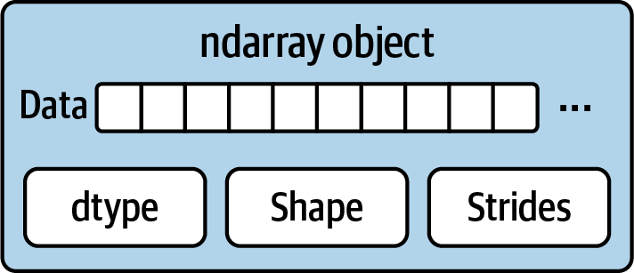
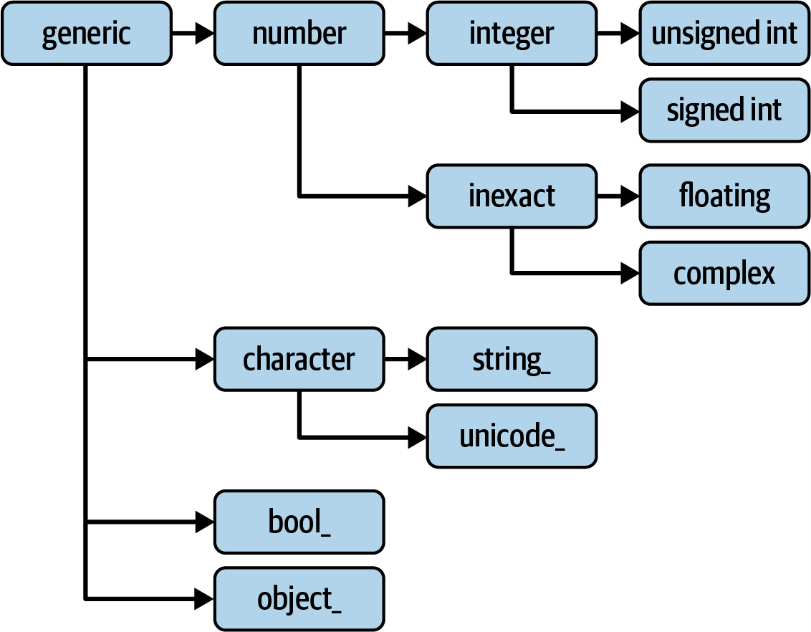
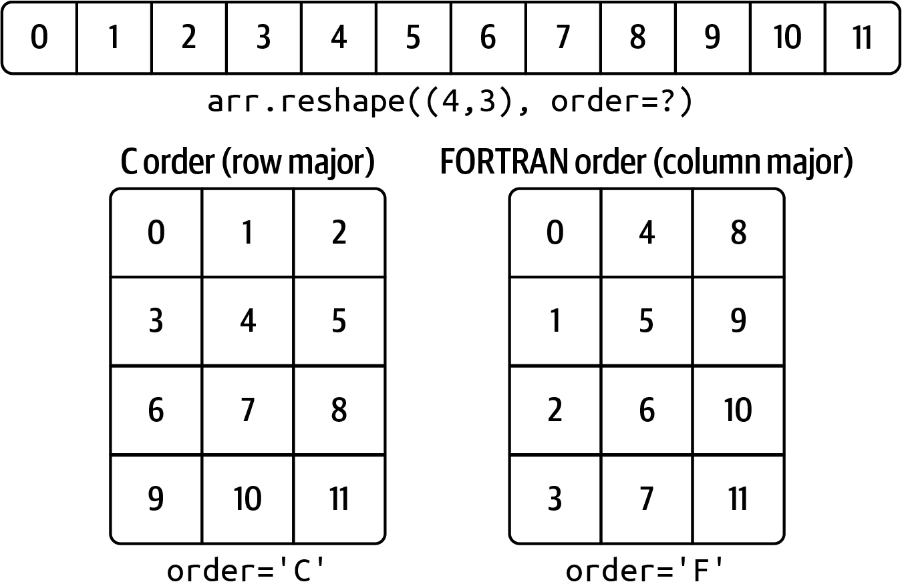
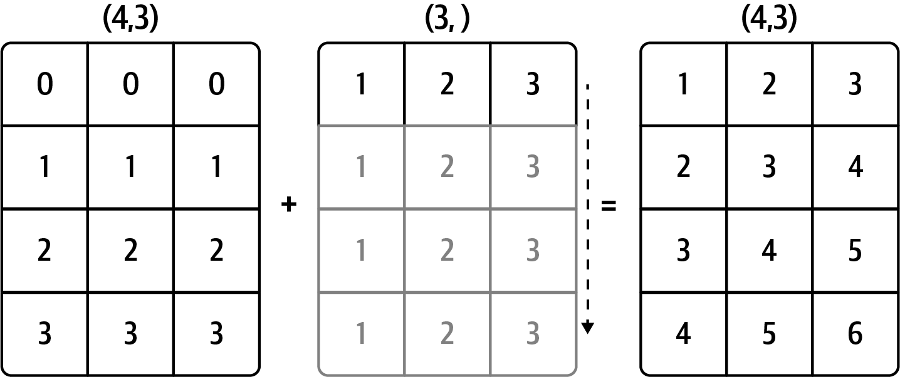
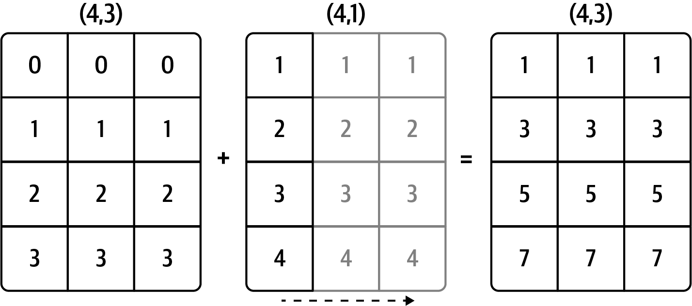
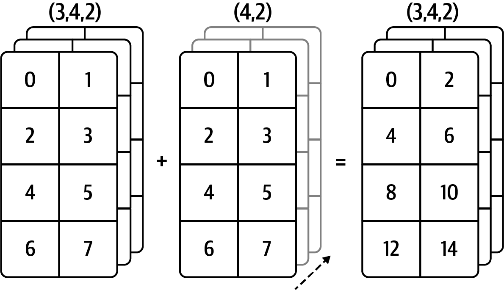
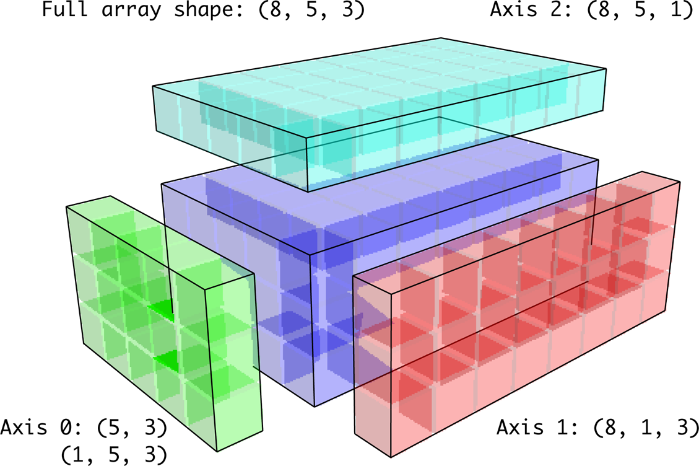

Appendix A — Advanced NumPy
In this appendix, I will go deeper into the NumPy library for array computing. This will include more internal details about the ndarray type and more advanced array manipulations and algorithms.
This appendix contains miscellaneous topics and does not necessarily need to be read linearly. Throughout the chapters, I will generate random data for many examples that will use the default random number generator in the numpy.random module:
In [11]: rng = np.random.default_rng(seed=12345)A.1 ndarray Object Internals
The NumPy ndarray provides a way to interpret a block of homogeneously typed data (either contiguous or strided) as a multidimensional array object. The data type, or dtype, determines how the data is interpreted as being floating point, integer, Boolean, or any of the other types we’ve been looking at.
Part of what makes ndarray flexible is that every array object is a strided view on a block of data. You might wonder, for example, how the array view arr[::2, ::-1] does not copy any data. The reason is that the ndarray is more than just a chunk of memory and a data type; it also has striding information that enables the array to move through memory with varying step sizes. More precisely, the ndarray internally consists of the following:
A pointer to data—that is, a block of data in RAM or in a memory-mapped file
The data type or dtype describing fixed-size value cells in the array
A tuple indicating the array’s shape
A tuple of strides—integers indicating the number of bytes to “step” in order to advance one element along a dimension
See Figure A.1 for a simple mock-up of the ndarray innards.

For example, a 10 × 5 array would have the shape (10, 5):
In [12]: np.ones((10, 5)).shape
Out[12]: (10, 5)A typical (C order) 3 × 4 × 5 array of float64 (8-byte) values has the strides (160, 40, 8) (knowing about the strides can be useful because, in general, the larger the strides on a particular axis, the more costly it is to perform computation along that axis):
In [13]: np.ones((3, 4, 5), dtype=np.float64).strides
Out[13]: (160, 40, 8)While it is rare that a typical NumPy user would be interested in the array strides, they are needed to construct "zero-copy" array views. Strides can even be negative, which enables an array to move "backward" through memory (this would be the case, for example, in a slice like obj[::-1] or obj[:, ::-1]).
NumPy Data Type Hierarchy
You may occasionally have code that needs to check whether an array contains integers, floating-point numbers, strings, or Python objects. Because there are multiple types of floating-point numbers (float16 through float128), checking that the data type is among a list of types would be very verbose. Fortunately, the data types have superclasses, such as np.integer and np.floating, which can be used with the np.issubdtype function:
In [14]: ints = np.ones(10, dtype=np.uint16)
In [15]: floats = np.ones(10, dtype=np.float32)
In [16]: np.issubdtype(ints.dtype, np.integer)
Out[16]: True
In [17]: np.issubdtype(floats.dtype, np.floating)
Out[17]: TrueYou can see all of the parent classes of a specific data type by calling the type’s mro method:
In [18]: np.float64.mro()
Out[18]:
[numpy.float64,
numpy.floating,
numpy.inexact,
numpy.number,
numpy.generic,
float,
object]Therefore, we also have:
In [19]: np.issubdtype(ints.dtype, np.number)
Out[19]: TrueMost NumPy users will never have to know about this, but it is occasionally useful. See Figure A.2 for a graph of the data type hierarchy and parent–subclass relationships.1

A.2 Advanced Array Manipulation
There are many ways to work with arrays beyond fancy indexing, slicing, and Boolean subsetting. While much of the heavy lifting for data analysis applications is handled by higher-level functions in pandas, you may at some point need to write a data algorithm that is not found in one of the existing libraries.
Reshaping Arrays
In many cases, you can convert an array from one shape to another without copying any data. To do this, pass a tuple indicating the new shape to the reshape array instance method. For example, suppose we had a one-dimensional array of values that we wished to rearrange into a matrix (this is illustrated in Figure A.3):
In [20]: arr = np.arange(8)
In [21]: arr
Out[21]: array([0, 1, 2, 3, 4, 5, 6, 7])
In [22]: arr.reshape((4, 2))
Out[22]:
array([[0, 1],
[2, 3],
[4, 5],
[6, 7]])
A multidimensional array can also be reshaped:
In [23]: arr.reshape((4, 2)).reshape((2, 4))
Out[23]:
array([[0, 1, 2, 3],
[4, 5, 6, 7]])One of the passed shape dimensions can be –1, in which case the value used for that dimension will be inferred from the data:
In [24]: arr = np.arange(15)
In [25]: arr.reshape((5, -1))
Out[25]:
array([[ 0, 1, 2],
[ 3, 4, 5],
[ 6, 7, 8],
[ 9, 10, 11],
[12, 13, 14]])Since an array’s shape attribute is a tuple, it can be passed to reshape, too:
In [26]: other_arr = np.ones((3, 5))
In [27]: other_arr.shape
Out[27]: (3, 5)
In [28]: arr.reshape(other_arr.shape)
Out[28]:
array([[ 0, 1, 2, 3, 4],
[ 5, 6, 7, 8, 9],
[10, 11, 12, 13, 14]])The opposite operation of reshape from one-dimensional to a higher dimension is typically known as flattening or raveling:
In [29]: arr = np.arange(15).reshape((5, 3))
In [30]: arr
Out[30]:
array([[ 0, 1, 2],
[ 3, 4, 5],
[ 6, 7, 8],
[ 9, 10, 11],
[12, 13, 14]])
In [31]: arr.ravel()
Out[31]: array([ 0, 1, 2, 3, 4, 5, 6, 7, 8, 9, 10, 11, 12, 13, 14])ravel does not produce a copy of the underlying values if the values in the result were contiguous in the original array.
The flatten method behaves like ravel except it always returns a copy of the data:
In [32]: arr.flatten()
Out[32]: array([ 0, 1, 2, 3, 4, 5, 6, 7, 8, 9, 10, 11, 12, 13, 14])The data can be reshaped or raveled in different orders. This is a slightly nuanced topic for new NumPy users and is therefore the next subtopic.
C Versus FORTRAN Order
NumPy is able to adapt to many different layouts of your data in memory. By default, NumPy arrays are created in row major order. Spatially this means that if you have a two-dimensional array of data, the items in each row of the array are stored in adjacent memory locations. The alternative to row major ordering is column major order, which means that values within each column of data are stored in adjacent memory locations.
For historical reasons, row and column major order are also known as C and FORTRAN order, respectively. In the FORTRAN 77 language, matrices are all column major.
Functions like reshape and ravel accept an order argument indicating the order to use the data in the array. This is usually set to 'C' or 'F' in most cases (there are also less commonly used options 'A' and 'K'; see the NumPy documentation, and refer back to Figure A.3 for an illustration of these options):
In [33]: arr = np.arange(12).reshape((3, 4))
In [34]: arr
Out[34]:
array([[ 0, 1, 2, 3],
[ 4, 5, 6, 7],
[ 8, 9, 10, 11]])
In [35]: arr.ravel()
Out[35]: array([ 0, 1, 2, 3, 4, 5, 6, 7, 8, 9, 10, 11])
In [36]: arr.ravel('F')
Out[36]: array([ 0, 4, 8, 1, 5, 9, 2, 6, 10, 3, 7, 11])Reshaping arrays with more than two dimensions can be a bit mind-bending (see Figure A.3). The key difference between C and FORTRAN order is the way in which the dimensions are walked:
- C/row major order
-
Traverse higher dimensions first (e.g., axis 1 before advancing on axis 0).
- FORTRAN/column major order
-
Traverse higher dimensions last (e.g., axis 0 before advancing on axis 1).
Concatenating and Splitting Arrays
numpy.concatenate takes a sequence (tuple, list, etc.) of arrays and joins them in order along the input axis:
In [37]: arr1 = np.array([[1, 2, 3], [4, 5, 6]])
In [38]: arr2 = np.array([[7, 8, 9], [10, 11, 12]])
In [39]: np.concatenate([arr1, arr2], axis=0)
Out[39]:
array([[ 1, 2, 3],
[ 4, 5, 6],
[ 7, 8, 9],
[10, 11, 12]])
In [40]: np.concatenate([arr1, arr2], axis=1)
Out[40]:
array([[ 1, 2, 3, 7, 8, 9],
[ 4, 5, 6, 10, 11, 12]])There are some convenience functions, like vstack and hstack, for common kinds of concatenation. The preceding operations could have been expressed as:
In [41]: np.vstack((arr1, arr2))
Out[41]:
array([[ 1, 2, 3],
[ 4, 5, 6],
[ 7, 8, 9],
[10, 11, 12]])
In [42]: np.hstack((arr1, arr2))
Out[42]:
array([[ 1, 2, 3, 7, 8, 9],
[ 4, 5, 6, 10, 11, 12]])split, on the other hand, slices an array into multiple arrays along an axis:
In [43]: arr = rng.standard_normal((5, 2))
In [44]: arr
Out[44]:
array([[-1.4238, 1.2637],
[-0.8707, -0.2592],
[-0.0753, -0.7409],
[-1.3678, 0.6489],
[ 0.3611, -1.9529]])
In [45]: first, second, third = np.split(arr, [1, 3])
In [46]: first
Out[46]: array([[-1.4238, 1.2637]])
In [47]: second
Out[47]:
array([[-0.8707, -0.2592],
[-0.0753, -0.7409]])
In [48]: third
Out[48]:
array([[-1.3678, 0.6489],
[ 0.3611, -1.9529]])The value [1, 3] passed to np.split indicates the indices at which to split the array into pieces.
See Table A.1 for a list of all relevant concatenation and splitting functions, some of which are provided only as a convenience of the very general-purpose concatenate.
| Function | Description |
|---|---|
concatenate |
Most general function, concatenate collection of arrays along one axis |
vstack, row_stack |
Stack arrays by rows (along axis 0) |
hstack |
Stack arrays by columns (along axis 1) |
column_stack |
Like hstack, but convert 1D arrays to 2D column vectors first |
dstack |
Stack arrays by “depth” (along axis 2) |
split |
Split array at passed locations along a particular axis |
hsplit/vsplit |
Convenience functions for splitting on axis 0 and 1, respectively |
Stacking helpers: r_ and c_
There are two special objects in the NumPy namespace, r_ and c_, that make stacking arrays more concise:
In [49]: arr = np.arange(6)
In [50]: arr1 = arr.reshape((3, 2))
In [51]: arr2 = rng.standard_normal((3, 2))
In [52]: np.r_[arr1, arr2]
Out[52]:
array([[ 0. , 1. ],
[ 2. , 3. ],
[ 4. , 5. ],
[ 2.3474, 0.9685],
[-0.7594, 0.9022],
[-0.467 , -0.0607]])
In [53]: np.c_[np.r_[arr1, arr2], arr]
Out[53]:
array([[ 0. , 1. , 0. ],
[ 2. , 3. , 1. ],
[ 4. , 5. , 2. ],
[ 2.3474, 0.9685, 3. ],
[-0.7594, 0.9022, 4. ],
[-0.467 , -0.0607, 5. ]])These additionally can translate slices to arrays:
In [54]: np.c_[1:6, -10:-5]
Out[54]:
array([[ 1, -10],
[ 2, -9],
[ 3, -8],
[ 4, -7],
[ 5, -6]])See the docstring for more on what you can do with c_ and r_.
Repeating Elements: tile and repeat
Two useful tools for repeating or replicating arrays to produce larger arrays are the repeat and tile functions. repeat replicates each element in an array some number of times, producing a larger array:
In [55]: arr = np.arange(3)
In [56]: arr
Out[56]: array([0, 1, 2])
In [57]: arr.repeat(3)
Out[57]: array([0, 0, 0, 1, 1, 1, 2, 2, 2])The need to replicate or repeat arrays can be less common with NumPy than it is with other array programming frameworks like MATLAB. One reason for this is that broadcasting often fills this need better, which is the subject of the next section.
By default, if you pass an integer, each element will be repeated that number of times. If you pass an array of integers, each element can be repeated a different number of times:
In [58]: arr.repeat([2, 3, 4])
Out[58]: array([0, 0, 1, 1, 1, 2, 2, 2, 2])Multidimensional arrays can have their elements repeated along a particular axis:
In [59]: arr = rng.standard_normal((2, 2))
In [60]: arr
Out[60]:
array([[ 0.7888, -1.2567],
[ 0.5759, 1.399 ]])
In [61]: arr.repeat(2, axis=0)
Out[61]:
array([[ 0.7888, -1.2567],
[ 0.7888, -1.2567],
[ 0.5759, 1.399 ],
[ 0.5759, 1.399 ]])Note that if no axis is passed, the array will be flattened first, which is likely not what you want. Similarly, you can pass an array of integers when repeating a multidimensional array to repeat a given slice a different number of times:
In [62]: arr.repeat([2, 3], axis=0)
Out[62]:
array([[ 0.7888, -1.2567],
[ 0.7888, -1.2567],
[ 0.5759, 1.399 ],
[ 0.5759, 1.399 ],
[ 0.5759, 1.399 ]])
In [63]: arr.repeat([2, 3], axis=1)
Out[63]:
array([[ 0.7888, 0.7888, -1.2567, -1.2567, -1.2567],
[ 0.5759, 0.5759, 1.399 , 1.399 , 1.399 ]])tile, on the other hand, is a shortcut for stacking copies of an array along an axis. Visually you can think of it as being akin to “laying down tiles”:
In [64]: arr
Out[64]:
array([[ 0.7888, -1.2567],
[ 0.5759, 1.399 ]])
In [65]: np.tile(arr, 2)
Out[65]:
array([[ 0.7888, -1.2567, 0.7888, -1.2567],
[ 0.5759, 1.399 , 0.5759, 1.399 ]])The second argument is the number of tiles; with a scalar, the tiling is made row by row, rather than column by column. The second argument to tile can be a tuple indicating the layout of the “tiling”:
In [66]: arr
Out[66]:
array([[ 0.7888, -1.2567],
[ 0.5759, 1.399 ]])
In [67]: np.tile(arr, (2, 1))
Out[67]:
array([[ 0.7888, -1.2567],
[ 0.5759, 1.399 ],
[ 0.7888, -1.2567],
[ 0.5759, 1.399 ]])
In [68]: np.tile(arr, (3, 2))
Out[68]:
array([[ 0.7888, -1.2567, 0.7888, -1.2567],
[ 0.5759, 1.399 , 0.5759, 1.399 ],
[ 0.7888, -1.2567, 0.7888, -1.2567],
[ 0.5759, 1.399 , 0.5759, 1.399 ],
[ 0.7888, -1.2567, 0.7888, -1.2567],
[ 0.5759, 1.399 , 0.5759, 1.399 ]])Fancy Indexing Equivalents: take and put
As you may recall from Ch 4: NumPy Basics: Arrays and Vectorized Computation, one way to get and set subsets of arrays is by fancy indexing using integer arrays:
In [69]: arr = np.arange(10) * 100
In [70]: inds = [7, 1, 2, 6]
In [71]: arr[inds]
Out[71]: array([700, 100, 200, 600])There are alternative ndarray methods that are useful in the special case of making a selection only on a single axis:
In [72]: arr.take(inds)
Out[72]: array([700, 100, 200, 600])
In [73]: arr.put(inds, 42)
In [74]: arr
Out[74]: array([ 0, 42, 42, 300, 400, 500, 42, 42, 800, 900])
In [75]: arr.put(inds, [40, 41, 42, 43])
In [76]: arr
Out[76]: array([ 0, 41, 42, 300, 400, 500, 43, 40, 800, 900])To use take along other axes, you can pass the axis keyword:
In [77]: inds = [2, 0, 2, 1]
In [78]: arr = rng.standard_normal((2, 4))
In [79]: arr
Out[79]:
array([[ 1.3223, -0.2997, 0.9029, -1.6216],
[-0.1582, 0.4495, -1.3436, -0.0817]])
In [80]: arr.take(inds, axis=1)
Out[80]:
array([[ 0.9029, 1.3223, 0.9029, -0.2997],
[-1.3436, -0.1582, -1.3436, 0.4495]])put does not accept an axis argument but rather indexes into the flattened (one-dimensional, C order) version of the array. Thus, when you need to set elements using an index array on other axes, it is best to use []-based indexing.
A.3 Broadcasting
Broadcasting governs how operations work between arrays of different shapes. It can be a powerful feature, but it can cause confusion, even for experienced users. The simplest example of broadcasting occurs when combining a scalar value with an array:
In [81]: arr = np.arange(5)
In [82]: arr
Out[82]: array([0, 1, 2, 3, 4])
In [83]: arr * 4
Out[83]: array([ 0, 4, 8, 12, 16])Here we say that the scalar value 4 has been broadcast to all of the other elements in the multiplication operation.
For example, we can demean each column of an array by subtracting the column means. In this case, it is necessary only to subtract an array containing the mean of each column:
In [84]: arr = rng.standard_normal((4, 3))
In [85]: arr.mean(0)
Out[85]: array([0.1206, 0.243 , 0.1444])
In [86]: demeaned = arr - arr.mean(0)
In [87]: demeaned
Out[87]:
array([[ 1.6042, 2.3751, 0.633 ],
[ 0.7081, -1.202 , -1.3538],
[-1.5329, 0.2985, 0.6076],
[-0.7793, -1.4717, 0.1132]])
In [88]: demeaned.mean(0)
Out[88]: array([ 0., -0., 0.])See Figure A.4 for an illustration of this operation. Demeaning the rows as a broadcast operation requires a bit more care. Fortunately, broadcasting potentially lower dimensional values across any dimension of an array (like subtracting the row means from each column of a two-dimensional array) is possible as long as you follow the rules.
This brings us to the broadcasting rule.
Two arrays are compatible for broadcasting if for each trailing dimension (i.e., starting from the end) the axis lengths match or if either of the lengths is 1. Broadcasting is then performed over the missing or length 1 dimensions.

Even as an experienced NumPy user, I often find myself having to pause and draw a diagram as I think about the broadcasting rule. Consider the last example and suppose we wished instead to subtract the mean value from each row. Since arr.mean(0) has length 3, it is compatible for broadcasting across axis 0 because the trailing dimension in arr is 3 and therefore matches. According to the rules, to subtract over axis 1 (i.e., subtract the row mean from each row), the smaller array must have the shape (4, 1):
In [89]: arr
Out[89]:
array([[ 1.7247, 2.6182, 0.7774],
[ 0.8286, -0.959 , -1.2094],
[-1.4123, 0.5415, 0.7519],
[-0.6588, -1.2287, 0.2576]])
In [90]: row_means = arr.mean(1)
In [91]: row_means.shape
Out[91]: (4,)
In [92]: row_means.reshape((4, 1))
Out[92]:
array([[ 1.7068],
[-0.4466],
[-0.0396],
[-0.5433]])
In [93]: demeaned = arr - row_means.reshape((4, 1))
In [94]: demeaned.mean(1)
Out[94]: array([-0., 0., 0., 0.])See Figure A.5 for an illustration of this operation.

See Figure A.6 for another illustration, this time adding a two-dimensional array to a three-dimensional one across axis 0.

Broadcasting over Other Axes
Broadcasting with higher dimensional arrays can seem even more mind-bending, but it is really a matter of following the rules. If you don’t, you’ll get an error like this:
In [95]: arr - arr.mean(1)
---------------------------------------------------------------------------
ValueError Traceback (most recent call last)
<ipython-input-95-8b8ada26fac0> in <module>
----> 1 arr - arr.mean(1)
ValueError: operands could not be broadcast together with shapes (4,3) (4,) It’s quite common to want to perform an arithmetic operation with a lower dimensional array across axes other than axis 0. According to the broadcasting rule, the “broadcast dimensions” must be 1 in the smaller array. In the example of row demeaning shown here, this means reshaping the row to be shape (4, 1) instead of (4,):
In [96]: arr - arr.mean(1).reshape((4, 1))
Out[96]:
array([[ 0.018 , 0.9114, -0.9294],
[ 1.2752, -0.5124, -0.7628],
[-1.3727, 0.5811, 0.7915],
[-0.1155, -0.6854, 0.8009]])In the three-dimensional case, broadcasting over any of the three dimensions is only a matter of reshaping the data to be shape compatible. Figure A.7 nicely visualizes the shapes required to broadcast over each axis of a three-dimensional array.

A common problem, therefore, is needing to add a new axis with length 1 specifically for broadcasting purposes. Using reshape is one option, but inserting an axis requires constructing a tuple indicating the new shape. This often can be a tedious exercise. Thus, NumPy arrays offer a special syntax for inserting new axes by indexing. We use the special np.newaxis attribute along with “full” slices to insert the new axis:
In [97]: arr = np.zeros((4, 4))
In [98]: arr_3d = arr[:, np.newaxis, :]
In [99]: arr_3d.shape
Out[99]: (4, 1, 4)
In [100]: arr_1d = rng.standard_normal(3)
In [101]: arr_1d[:, np.newaxis]
Out[101]:
array([[ 0.3129],
[-0.1308],
[ 1.27 ]])
In [102]: arr_1d[np.newaxis, :]
Out[102]: array([[ 0.3129, -0.1308, 1.27 ]])Thus, if we had a three-dimensional array and wanted to demean axis 2, we would need to write:
In [103]: arr = rng.standard_normal((3, 4, 5))
In [104]: depth_means = arr.mean(2)
In [105]: depth_means
Out[105]:
array([[ 0.0431, 0.2747, -0.1885, -0.2014],
[-0.5732, -0.5467, 0.1183, -0.6301],
[ 0.0972, 0.5954, 0.0331, -0.6002]])
In [106]: depth_means.shape
Out[106]: (3, 4)
In [107]: demeaned = arr - depth_means[:, :, np.newaxis]
In [108]: demeaned.mean(2)
Out[108]:
array([[ 0., -0., 0., -0.],
[ 0., -0., -0., -0.],
[ 0., 0., 0., 0.]])You might be wondering if there’s a way to generalize demeaning over an axis without sacrificing performance. There is, but it requires some indexing gymnastics:
def demean_axis(arr, axis=0):
means = arr.mean(axis)
# This generalizes things like [:, :, np.newaxis] to N dimensions
indexer = [slice(None)] * arr.ndim
indexer[axis] = np.newaxis
return arr - means[indexer]Setting Array Values by Broadcasting
The same broadcasting rule governing arithmetic operations also applies to setting values via array indexing. In a simple case, we can do things like:
In [109]: arr = np.zeros((4, 3))
In [110]: arr[:] = 5
In [111]: arr
Out[111]:
array([[5., 5., 5.],
[5., 5., 5.],
[5., 5., 5.],
[5., 5., 5.]])However, if we had a one-dimensional array of values we wanted to set into the columns of the array, we can do that as long as the shape is compatible:
In [112]: col = np.array([1.28, -0.42, 0.44, 1.6])
In [113]: arr[:] = col[:, np.newaxis]
In [114]: arr
Out[114]:
array([[ 1.28, 1.28, 1.28],
[-0.42, -0.42, -0.42],
[ 0.44, 0.44, 0.44],
[ 1.6 , 1.6 , 1.6 ]])
In [115]: arr[:2] = [[-1.37], [0.509]]
In [116]: arr
Out[116]:
array([[-1.37 , -1.37 , -1.37 ],
[ 0.509, 0.509, 0.509],
[ 0.44 , 0.44 , 0.44 ],
[ 1.6 , 1.6 , 1.6 ]])A.4 Advanced ufunc Usage
While many NumPy users will only use the fast element-wise operations provided by the universal functions, a number of additional features occasionally can help you write more concise code without explicit loops.
ufunc Instance Methods
Each of NumPy’s binary ufuncs has special methods for performing certain kinds of special vectorized operations. These are summarized in Table A.2, but I’ll give a few concrete examples to illustrate how they work.
reduce takes a single array and aggregates its values, optionally along an axis, by performing a sequence of binary operations. For example, an alternative way to sum elements in an array is to use np.add.reduce:
In [117]: arr = np.arange(10)
In [118]: np.add.reduce(arr)
Out[118]: 45
In [119]: arr.sum()
Out[119]: 45The starting value (for example, 0 for add) depends on the ufunc. If an axis is passed, the reduction is performed along that axis. This allows you to answer certain kinds of questions in a concise way. As a less mundane example, we can use np.logical_and to check whether the values in each row of an array are sorted:
In [120]: my_rng = np.random.default_rng(12346) # for reproducibility
In [121]: arr = my_rng.standard_normal((5, 5))
In [122]: arr
Out[122]:
array([[-0.9039, 0.1571, 0.8976, -0.7622, -0.1763],
[ 0.053 , -1.6284, -0.1775, 1.9636, 1.7813],
[-0.8797, -1.6985, -1.8189, 0.119 , -0.4441],
[ 0.7691, -0.0343, 0.3925, 0.7589, -0.0705],
[ 1.0498, 1.0297, -0.4201, 0.7863, 0.9612]])
In [123]: arr[::2].sort(1) # sort a few rows
In [124]: arr[:, :-1] < arr[:, 1:]
Out[124]:
array([[ True, True, True, True],
[False, True, True, False],
[ True, True, True, True],
[False, True, True, False],
[ True, True, True, True]])
In [125]: np.logical_and.reduce(arr[:, :-1] < arr[:, 1:], axis=1)
Out[125]: array([ True, False, True, False, True])Note that logical_and.reduce is equivalent to the all method.
The accumulate ufunc method is related to reduce, like cumsum is related to sum. It produces an array of the same size with the intermediate “accumulated” values:
In [126]: arr = np.arange(15).reshape((3, 5))
In [127]: np.add.accumulate(arr, axis=1)
Out[127]:
array([[ 0, 1, 3, 6, 10],
[ 5, 11, 18, 26, 35],
[10, 21, 33, 46, 60]])outer performs a pair-wise cross product between two arrays:
In [128]: arr = np.arange(3).repeat([1, 2, 2])
In [129]: arr
Out[129]: array([0, 1, 1, 2, 2])
In [130]: np.multiply.outer(arr, np.arange(5))
Out[130]:
array([[0, 0, 0, 0, 0],
[0, 1, 2, 3, 4],
[0, 1, 2, 3, 4],
[0, 2, 4, 6, 8],
[0, 2, 4, 6, 8]])The output of outer will have a dimension that is the concatenation of the dimensions of the inputs:
In [131]: x, y = rng.standard_normal((3, 4)), rng.standard_normal(5)
In [132]: result = np.subtract.outer(x, y)
In [133]: result.shape
Out[133]: (3, 4, 5)The last method, reduceat, performs a “local reduce,” in essence an array “group by” operation in which slices of the array are aggregated together. It accepts a sequence of “bin edges” that indicate how to split and aggregate the values:
In [134]: arr = np.arange(10)
In [135]: np.add.reduceat(arr, [0, 5, 8])
Out[135]: array([10, 18, 17])The results are the reductions (here, sums) performed over arr[0:5], arr[5:8], and arr[8:]. As with the other methods, you can pass an axis argument:
In [136]: arr = np.multiply.outer(np.arange(4), np.arange(5))
In [137]: arr
Out[137]:
array([[ 0, 0, 0, 0, 0],
[ 0, 1, 2, 3, 4],
[ 0, 2, 4, 6, 8],
[ 0, 3, 6, 9, 12]])
In [138]: np.add.reduceat(arr, [0, 2, 4], axis=1)
Out[138]:
array([[ 0, 0, 0],
[ 1, 5, 4],
[ 2, 10, 8],
[ 3, 15, 12]])See Table A.2 for a partial listing of ufunc methods.
| Method | Description |
|---|---|
accumulate(x) |
Aggregate values, preserving all partial aggregates. |
at(x, indices, b=None) |
Perform operation in place on x at the specified indices. The argument b is the second input to ufuncs that requires two array inputs. |
reduce(x) |
Aggregate values by successive applications of the operation. |
reduceat(x, bins) |
“Local” reduce or “group by”; reduce contiguous slices of data to produce an aggregated array. |
outer(x, y) |
Apply operation to all pairs of elements in x and y; the resulting array has shape x.shape + y.shape. |
Writing New ufuncs in Python
There are a number of ways to create your own NumPy ufuncs. The most general is to use the NumPy C API, but that is beyond the scope of this book. In this section, we will look at pure Python ufuncs.
numpy.frompyfunc accepts a Python function along with a specification for the number of inputs and outputs. For example, a simple function that adds element-wise would be specified as:
In [139]: def add_elements(x, y):
.....: return x + y
In [140]: add_them = np.frompyfunc(add_elements, 2, 1)
In [141]: add_them(np.arange(8), np.arange(8))
Out[141]: array([0, 2, 4, 6, 8, 10, 12, 14], dtype=object)Functions created using frompyfunc always return arrays of Python objects, which can be inconvenient. Fortunately, there is an alternative (but slightly less feature rich) function, numpy.vectorize, that allows you to specify the output type:
In [142]: add_them = np.vectorize(add_elements, otypes=[np.float64])
In [143]: add_them(np.arange(8), np.arange(8))
Out[143]: array([ 0., 2., 4., 6., 8., 10., 12., 14.])These functions provide a way to create ufunc-like functions, but they are very slow because they require a Python function call to compute each element, which is a lot slower than NumPy’s C-based ufunc loops:
In [144]: arr = rng.standard_normal(10000)
In [145]: %timeit add_them(arr, arr)
1.18 ms +- 14.8 us per loop (mean +- std. dev. of 7 runs, 1000 loops each)
In [146]: %timeit np.add(arr, arr)
2.8 us +- 64.1 ns per loop (mean +- std. dev. of 7 runs, 100000 loops each)Later in this appendix we'll show how to create fast ufuncs in Python using the Numba library.
A.5 Structured and Record Arrays
You may have noticed up until now that ndarray is a homogeneous data container; that is, it represents a block of memory in which each element takes up the same number of bytes, as determined by the data type. On the surface, this would appear to not allow you to represent heterogeneous or tabular data. A structured array is an ndarray in which each element can be thought of as representing a struct in C (hence the “structured” name) or a row in a SQL table with multiple named fields:
In [147]: dtype = [('x', np.float64), ('y', np.int32)]
In [148]: sarr = np.array([(1.5, 6), (np.pi, -2)], dtype=dtype)
In [149]: sarr
Out[149]: array([(1.5 , 6), (3.1416, -2)], dtype=[('x', '<f8'), ('y', '<i4')])There are several ways to specify a structured data type (see the online NumPy documentation). One typical way is as a list of tuples with (field_name, field_data_type). Now, the elements of the array are tuple-like objects whose elements can be accessed like a dictionary:
In [150]: sarr[0]
Out[150]: (1.5, 6)
In [151]: sarr[0]['y']
Out[151]: 6The field names are stored in the dtype.names attribute. When you access a field on the structured array, a strided view on the data is returned, thus copying nothing:
In [152]: sarr['x']
Out[152]: array([1.5 , 3.1416])Nested Data Types and Multidimensional Fields
When specifying a structured data type, you can additionally pass a shape (as an int or tuple):
In [153]: dtype = [('x', np.int64, 3), ('y', np.int32)]
In [154]: arr = np.zeros(4, dtype=dtype)
In [155]: arr
Out[155]:
array([([0, 0, 0], 0), ([0, 0, 0], 0), ([0, 0, 0], 0), ([0, 0, 0], 0)],
dtype=[('x', '<i8', (3,)), ('y', '<i4')])In this case, the x field now refers to an array of length 3 for each record:
In [156]: arr[0]['x']
Out[156]: array([0, 0, 0])Conveniently, accessing arr['x'] then returns a two-dimensional array instead of a one-dimensional array as in prior examples:
In [157]: arr['x']
Out[157]:
array([[0, 0, 0],
[0, 0, 0],
[0, 0, 0],
[0, 0, 0]])This enables you to express more complicated, nested structures as a single block of memory in an array. You can also nest data types to make more complex structures. Here is an example:
In [158]: dtype = [('x', [('a', 'f8'), ('b', 'f4')]), ('y', np.int32)]
In [159]: data = np.array([((1, 2), 5), ((3, 4), 6)], dtype=dtype)
In [160]: data['x']
Out[160]: array([(1., 2.), (3., 4.)], dtype=[('a', '<f8'), ('b', '<f4')])
In [161]: data['y']
Out[161]: array([5, 6], dtype=int32)
In [162]: data['x']['a']
Out[162]: array([1., 3.])pandas DataFrame does not support this feature in the same way, though it is similar to hierarchical indexing.
Why Use Structured Arrays?
Compared with a pandas DataFrame, NumPy structured arrays are a lower level tool. They provide a means to interpret a block of memory as a tabular structure with nested columns. Since each element in the array is represented in memory as a fixed number of bytes, structured arrays provide an efficient way of writing data to and from disk (including memory maps), transporting it over the network, and other such uses. The memory layout of each value in a structured array is based on the binary representation of struct data types in the C programming language.
As another common use for structured arrays, writing data files as fixed-length record byte streams is a common way to serialize data in C and C++ code, which is sometimes found in legacy systems in industry. As long as the format of the file is known (the size of each record and the order, byte size, and data type of each element), the data can be read into memory with np.fromfile. Specialized uses like this are beyond the scope of this book, but it’s worth knowing that such things are possible.
A.6 More About Sorting
Like Python’s built-in list, the ndarray sort instance method is an in-place sort, meaning that the array contents are rearranged without producing a new array:
In [163]: arr = rng.standard_normal(6)
In [164]: arr.sort()
In [165]: arr
Out[165]: array([-1.1553, -0.9319, -0.5218, -0.4745, -0.1649, 0.03 ])When sorting arrays in place, remember that if the array is a view on a different ndarray, the original array will be modified:
In [166]: arr = rng.standard_normal((3, 5))
In [167]: arr
Out[167]:
array([[-1.1956, 0.4691, -0.3598, 1.0359, 0.2267],
[-0.7448, -0.5931, -1.055 , -0.0683, 0.458 ],
[-0.07 , 0.1462, -0.9944, 1.1436, 0.5026]])
In [168]: arr[:, 0].sort() # Sort first column values in place
In [169]: arr
Out[169]:
array([[-1.1956, 0.4691, -0.3598, 1.0359, 0.2267],
[-0.7448, -0.5931, -1.055 , -0.0683, 0.458 ],
[-0.07 , 0.1462, -0.9944, 1.1436, 0.5026]])On the other hand, numpy.sort creates a new, sorted copy of an array. Otherwise, it accepts the same arguments (such as kind) as ndarray's sort method:
In [170]: arr = rng.standard_normal(5)
In [171]: arr
Out[171]: array([ 0.8981, -1.1704, -0.2686, -0.796 , 1.4522])
In [172]: np.sort(arr)
Out[172]: array([-1.1704, -0.796 , -0.2686, 0.8981, 1.4522])
In [173]: arr
Out[173]: array([ 0.8981, -1.1704, -0.2686, -0.796 , 1.4522])All of these sort methods take an axis argument for independently sorting the sections of data along the passed axis:
In [174]: arr = rng.standard_normal((3, 5))
In [175]: arr
Out[175]:
array([[-0.2535, 2.1183, 0.3634, -0.6245, 1.1279],
[ 1.6164, -0.2287, -0.6201, -0.1143, -1.2067],
[-1.0872, -2.1518, -0.6287, -1.3199, 0.083 ]])
In [176]: arr.sort(axis=1)
In [177]: arr
Out[177]:
array([[-0.6245, -0.2535, 0.3634, 1.1279, 2.1183],
[-1.2067, -0.6201, -0.2287, -0.1143, 1.6164],
[-2.1518, -1.3199, -1.0872, -0.6287, 0.083 ]])You may notice that none of the sort methods have an option to sort in descending order. This is a problem in practice because array slicing produces views, thus not producing a copy or requiring any computational work. Many Python users are familiar with the “trick” that for a list of values, values[::-1] returns a list in reverse order. The same is true for ndarrays:
In [178]: arr[:, ::-1]
Out[178]:
array([[ 2.1183, 1.1279, 0.3634, -0.2535, -0.6245],
[ 1.6164, -0.1143, -0.2287, -0.6201, -1.2067],
[ 0.083 , -0.6287, -1.0872, -1.3199, -2.1518]])Indirect Sorts: argsort and lexsort
In data analysis you may need to reorder datasets by one or more keys. For example, a table of data about some students might need to be sorted by last name, then by first name. This is an example of an indirect sort, and if you’ve read the pandas-related chapters, you have already seen many higher-level examples. Given a key or keys (an array of values or multiple arrays of values), you wish to obtain an array of integer indices (I refer to them colloquially as indexers) that tells you how to reorder the data to be in sorted order. Two methods for this are argsort and numpy.lexsort. As an example:
In [179]: values = np.array([5, 0, 1, 3, 2])
In [180]: indexer = values.argsort()
In [181]: indexer
Out[181]: array([1, 2, 4, 3, 0])
In [182]: values[indexer]
Out[182]: array([0, 1, 2, 3, 5])As a more complicated example, this code reorders a two-dimensional array by its first row:
In [183]: arr = rng.standard_normal((3, 5))
In [184]: arr[0] = values
In [185]: arr
Out[185]:
array([[ 5. , 0. , 1. , 3. , 2. ],
[-0.7503, -2.1268, -1.391 , -0.4922, 0.4505],
[ 0.8926, -1.0479, 0.9553, 0.2936, 0.5379]])
In [186]: arr[:, arr[0].argsort()]
Out[186]:
array([[ 0. , 1. , 2. , 3. , 5. ],
[-2.1268, -1.391 , 0.4505, -0.4922, -0.7503],
[-1.0479, 0.9553, 0.5379, 0.2936, 0.8926]])lexsort is similar to argsort, but it performs an indirect lexicographical sort on multiple key arrays. Suppose we wanted to sort some data identified by first and last names:
In [187]: first_name = np.array(['Bob', 'Jane', 'Steve', 'Bill', 'Barbara'])
In [188]: last_name = np.array(['Jones', 'Arnold', 'Arnold', 'Jones', 'Walters'])
In [189]: sorter = np.lexsort((first_name, last_name))
In [190]: sorter
Out[190]: array([1, 2, 3, 0, 4])
In [191]: list(zip(last_name[sorter], first_name[sorter]))
Out[191]:
[('Arnold', 'Jane'),
('Arnold', 'Steve'),
('Jones', 'Bill'),
('Jones', 'Bob'),
('Walters', 'Barbara')]lexsort can be a bit confusing the first time you use it, because the order in which the keys are used to order the data starts with the last array passed. Here, last_name was used before first_name.
Alternative Sort Algorithms
A stable sorting algorithm preserves the relative position of equal elements. This can be especially important in indirect sorts where the relative ordering is meaningful:
In [192]: values = np.array(['2:first', '2:second', '1:first', '1:second',
.....: '1:third'])
In [193]: key = np.array([2, 2, 1, 1, 1])
In [194]: indexer = key.argsort(kind='mergesort')
In [195]: indexer
Out[195]: array([2, 3, 4, 0, 1])
In [196]: values.take(indexer)
Out[196]:
array(['1:first', '1:second', '1:third', '2:first', '2:second'],
dtype='<U8')The only stable sort available is mergesort, which has guaranteed O(n log n) performance, but its performance is on average worse than the default quicksort method. See Table A.3 for a summary of available methods and their relative performance (and performance guarantees). This is not something that most users will ever have to think about, but it's useful to know that it’s there.
| Kind | Speed | Stable | Work space | Worst case |
|---|---|---|---|---|
'quicksort' |
1 | No | 0 | O(n^2) |
'mergesort' |
2 | Yes | n / 2 |
O(n log n) |
'heapsort' |
3 | No | 0 | O(n log n) |
Partially Sorting Arrays
One of the goals of sorting can be to determine the largest or smallest elements in an array. NumPy has fast methods, numpy.partition and np.argpartition, for partitioning an array around the k-th smallest element:
In [197]: rng = np.random.default_rng(12345)
In [198]: arr = rng.standard_normal(20)
In [199]: arr
Out[199]:
array([-1.4238, 1.2637, -0.8707, -0.2592, -0.0753, -0.7409, -1.3678,
0.6489, 0.3611, -1.9529, 2.3474, 0.9685, -0.7594, 0.9022,
-0.467 , -0.0607, 0.7888, -1.2567, 0.5759, 1.399 ])
In [200]: np.partition(arr, 3)
Out[200]:
array([-1.9529, -1.4238, -1.3678, -1.2567, -0.8707, -0.7594, -0.7409,
-0.0607, 0.3611, -0.0753, -0.2592, -0.467 , 0.5759, 0.9022,
0.9685, 0.6489, 0.7888, 1.2637, 1.399 , 2.3474])After you call partition(arr, 3), the first three elements in the result are the smallest three values in no particular order. numpy.argpartition, similar to numpy.argsort, returns the indices that rearrange the data into the equivalent order:
In [201]: indices = np.argpartition(arr, 3)
In [202]: indices
Out[202]:
array([ 9, 0, 6, 17, 2, 12, 5, 15, 8, 4, 3, 14, 18, 13, 11, 7, 16,
1, 19, 10])
In [203]: arr.take(indices)
Out[203]:
array([-1.9529, -1.4238, -1.3678, -1.2567, -0.8707, -0.7594, -0.7409,
-0.0607, 0.3611, -0.0753, -0.2592, -0.467 , 0.5759, 0.9022,
0.9685, 0.6489, 0.7888, 1.2637, 1.399 , 2.3474])numpy.searchsorted: Finding Elements in a Sorted Array
searchsorted is an array method that performs a binary search on a sorted array, returning the location in the array where the value would need to be inserted to maintain sortedness:
In [204]: arr = np.array([0, 1, 7, 12, 15])
In [205]: arr.searchsorted(9)
Out[205]: 3You can also pass an array of values to get an array of indices back:
In [206]: arr.searchsorted([0, 8, 11, 16])
Out[206]: array([0, 3, 3, 5])You might have noticed that searchsorted returned 0 for the 0 element. This is because the default behavior is to return the index at the left side of a group of equal values:
In [207]: arr = np.array([0, 0, 0, 1, 1, 1, 1])
In [208]: arr.searchsorted([0, 1])
Out[208]: array([0, 3])
In [209]: arr.searchsorted([0, 1], side='right')
Out[209]: array([3, 7])As another application of searchsorted, suppose we had an array of values between 0 and 10,000, and a separate array of “bucket edges” that we wanted to use to bin the data:
In [210]: data = np.floor(rng.uniform(0, 10000, size=50))
In [211]: bins = np.array([0, 100, 1000, 5000, 10000])
In [212]: data
Out[212]:
array([ 815., 1598., 3401., 4651., 2664., 8157., 1932., 1294., 916.,
5985., 8547., 6016., 9319., 7247., 8605., 9293., 5461., 9376.,
4949., 2737., 4517., 6650., 3308., 9034., 2570., 3398., 2588.,
3554., 50., 6286., 2823., 680., 6168., 1763., 3043., 4408.,
1502., 2179., 4743., 4763., 2552., 2975., 2790., 2605., 4827.,
2119., 4956., 2462., 8384., 1801.])To then get a labeling to which interval each data point belongs (where 1 would mean the bucket [0, 100)), we can simply use searchsorted:
In [213]: labels = bins.searchsorted(data)
In [214]: labels
Out[214]:
array([2, 3, 3, 3, 3, 4, 3, 3, 2, 4, 4, 4, 4, 4, 4, 4, 4, 4, 3, 3, 3, 4,
3, 4, 3, 3, 3, 3, 1, 4, 3, 2, 4, 3, 3, 3, 3, 3, 3, 3, 3, 3, 3, 3,
3, 3, 3, 3, 4, 3])This, combined with pandas’s groupby, can be used to bin data:
In [215]: pd.Series(data).groupby(labels).mean()
Out[215]:
1 50.000000
2 803.666667
3 3079.741935
4 7635.200000
dtype: float64A.7 Writing Fast NumPy Functions with Numba
Numba is an open source project that creates fast functions for NumPy-like data using CPUs, GPUs, or other hardware. It uses the LLVM Project to translate Python code into compiled machine code.
To introduce Numba, let's consider a pure Python function that computes the expression (x - y).mean() using a for loop:
import numpy as np
def mean_distance(x, y):
nx = len(x)
result = 0.0
count = 0
for i in range(nx):
result += x[i] - y[i]
count += 1
return result / countThis function is slow:
In [209]: x = rng.standard_normal(10_000_000)
In [210]: y = rng.standard_normal(10_000_000)
In [211]: %timeit mean_distance(x, y)
1 loop, best of 3: 2 s per loop
In [212]: %timeit (x - y).mean()
100 loops, best of 3: 14.7 ms per loopThe NumPy version is over 100 times faster. We can turn this function into a compiled Numba function using the numba.jit function:
In [213]: import numba as nb
In [214]: numba_mean_distance = nb.jit(mean_distance)We also could have written this as a decorator:
@nb.jit
def numba_mean_distance(x, y):
nx = len(x)
result = 0.0
count = 0
for i in range(nx):
result += x[i] - y[i]
count += 1
return result / countThe resulting function is actually faster than the vectorized NumPy version:
In [215]: %timeit numba_mean_distance(x, y)
100 loops, best of 3: 10.3 ms per loopNumba cannot compile all pure Python code, but it supports a significant subset of Python that is most useful for writing numerical algorithms.
Numba is a deep library, supporting different kinds of hardware, modes of compilation, and user extensions. It is also able to compile a substantial subset of the NumPy Python API without explicit for loops. Numba is able to recognize constructs that can be compiled to machine code, while substituting calls to the CPython API for functions that it does not know how to compile. Numba's jit function option, nopython=True, restricts allowed code to Python code that can be compiled to LLVM without any Python C API calls. jit(nopython=True) has a shorter alias, numba.njit.
In the previous example, we could have written:
from numba import float64, njit
@njit(float64(float64[:], float64[:]))
def mean_distance(x, y):
return (x - y).mean()I encourage you to learn more by reading the online documentation for Numba. The next section shows an example of creating custom NumPy ufunc objects.
Creating Custom numpy.ufunc Objects with Numba
The numba.vectorize function creates compiled NumPy ufuncs, which behave like built-in ufuncs. Let's consider a Python implementation of numpy.add:
from numba import vectorize
@vectorize
def nb_add(x, y):
return x + yNow we have:
In [13]: x = np.arange(10)
In [14]: nb_add(x, x)
Out[14]: array([ 0., 2., 4., 6., 8., 10., 12., 14., 16., 18.])
In [15]: nb_add.accumulate(x, 0)
Out[15]: array([ 0., 1., 3., 6., 10., 15., 21., 28., 36., 45.])A.8 Advanced Array Input and Output
In Ch 4: NumPy Basics: Arrays and Vectorized Computation, we became acquainted with np.save and np.load for storing arrays in binary format on disk. There are a number of additional options to consider for more sophisticated use. In particular, memory maps have the additional benefit of enabling you to do certain operations with datasets that do not fit into RAM.
Memory-Mapped Files
A memory-mapped file is a method for interacting with binary data on disk as though it is stored in an in-memory array. NumPy implements a memmap object that is ndarray-like, enabling small segments of a large file to be read and written without reading the whole array into memory. Additionally, a memmap has the same methods as an in-memory array and thus can be substituted into many algorithms where an ndarray would be expected.
To create a new memory map, use the function np.memmap and pass a file path, data type, shape, and file mode:
In [217]: mmap = np.memmap('mymmap', dtype='float64', mode='w+',
.....: shape=(10000, 10000))
In [218]: mmap
Out[218]:
memmap([[0., 0., 0., ..., 0., 0., 0.],
[0., 0., 0., ..., 0., 0., 0.],
[0., 0., 0., ..., 0., 0., 0.],
...,
[0., 0., 0., ..., 0., 0., 0.],
[0., 0., 0., ..., 0., 0., 0.],
[0., 0., 0., ..., 0., 0., 0.]])Slicing a memmap returns views on the data on disk:
In [219]: section = mmap[:5]If you assign data to these, it will be buffered in memory, which means that the changes will not be immediately reflected in the on-disk file if you were to read the file in a different application. Any modifications can be synchronized to disk by calling flush:
In [220]: section[:] = rng.standard_normal((5, 10000))
In [221]: mmap.flush()
In [222]: mmap
Out[222]:
memmap([[-0.9074, -1.0954, 0.0071, ..., 0.2753, -1.1641, 0.8521],
[-0.0103, -0.0646, -1.0615, ..., -1.1003, 0.2505, 0.5832],
[ 0.4583, 1.2992, 1.7137, ..., 0.8691, -0.7889, -0.2431],
...,
[ 0. , 0. , 0. , ..., 0. , 0. , 0. ],
[ 0. , 0. , 0. , ..., 0. , 0. , 0. ],
[ 0. , 0. , 0. , ..., 0. , 0. , 0. ]])
In [223]: del mmapWhenever a memory map falls out of scope and is garbage collected, any changes will be flushed to disk also. When opening an existing memory map, you still have to specify the data type and shape, as the file is only a block of binary data without any data type information, shape, or strides:
In [224]: mmap = np.memmap('mymmap', dtype='float64', shape=(10000, 10000))
In [225]: mmap
Out[225]:
memmap([[-0.9074, -1.0954, 0.0071, ..., 0.2753, -1.1641, 0.8521],
[-0.0103, -0.0646, -1.0615, ..., -1.1003, 0.2505, 0.5832],
[ 0.4583, 1.2992, 1.7137, ..., 0.8691, -0.7889, -0.2431],
...,
[ 0. , 0. , 0. , ..., 0. , 0. , 0. ],
[ 0. , 0. , 0. , ..., 0. , 0. , 0. ],
[ 0. , 0. , 0. , ..., 0. , 0. , 0. ]])Memory maps also work with structured or nested data types, as described in Structured and Record Arrays.
If you ran this example on your computer, you may want to delete the large file that we created above:
In [226]: %xdel mmap
In [227]: !rm mymmapHDF5 and Other Array Storage Options
PyTables and h5py are two Python projects providing NumPy-friendly interfaces for storing array data in the efficient and compressible HDF5 format (HDF stands for hierarchical data format). You can safely store hundreds of gigabytes or even terabytes of data in HDF5 format. To learn more about using HDF5 with Python, I recommend reading the pandas online documentation.
A.9 Performance Tips
Adapting data processing code to use NumPy generally makes things much faster, as array operations typically replace otherwise comparatively extremely slow pure Python loops. Here are some tips to help get the best performance out of the library:
Convert Python loops and conditional logic to array operations and Boolean array operations.
Use broadcasting whenever possible.
Use arrays views (slicing) to avoid copying data.
Utilize ufuncs and ufunc methods.
If you can’t get the performance you require after exhausting the capabilities provided by NumPy alone, consider writing code in C, FORTRAN, or Cython. I use Cython frequently in my own work as a way to get C-like performance, often with much less development time.
The Importance of Contiguous Memory
While the full extent of this topic is a bit outside the scope of this book, in some applications the memory layout of an array can significantly affect the speed of computations. This is based partly on performance differences having to do with the cache hierarchy of the CPU; operations accessing contiguous blocks of memory (e.g., summing the rows of a C order array) will generally be the fastest because the memory subsystem will buffer the appropriate blocks of memory into the low latency L1 or L2 CPU caches. Also, certain code paths inside NumPy’s C codebase have been optimized for the contiguous case in which generic strided memory access can be avoided.
To say that an array’s memory layout is contiguous means that the elements are stored in memory in the order that they appear in the array with respect to FORTRAN (column major) or C (row major) ordering. By default, NumPy arrays are created as C contiguous or just simply contiguous. A column major array, such as the transpose of a C-contiguous array, is thus said to be FORTRAN contiguous. These properties can be explicitly checked via the flags attribute on the ndarray:
In [228]: arr_c = np.ones((100, 10000), order='C')
In [229]: arr_f = np.ones((100, 10000), order='F')
In [230]: arr_c.flags
Out[230]:
C_CONTIGUOUS : True
F_CONTIGUOUS : False
OWNDATA : True
WRITEABLE : True
ALIGNED : True
WRITEBACKIFCOPY : False
In [231]: arr_f.flags
Out[231]:
C_CONTIGUOUS : False
F_CONTIGUOUS : True
OWNDATA : True
WRITEABLE : True
ALIGNED : True
WRITEBACKIFCOPY : False
In [232]: arr_f.flags.f_contiguous
Out[232]: TrueIn this example, summing the rows of these arrays should, in theory, be faster for arr_c than arr_f since the rows are contiguous in memory. Here, I check using %timeit in IPython (these results may differ on your machine):
In [233]: %timeit arr_c.sum(1)
199 us +- 1.18 us per loop (mean +- std. dev. of 7 runs, 1000 loops each)
In [234]: %timeit arr_f.sum(1)
371 us +- 6.77 us per loop (mean +- std. dev. of 7 runs, 1000 loops each)When you're looking to squeeze more performance out of NumPy, this is often a place to invest some effort. If you have an array that does not have the desired memory order, you can use copy and pass either 'C' or 'F':
In [235]: arr_f.copy('C').flags
Out[235]:
C_CONTIGUOUS : True
F_CONTIGUOUS : False
OWNDATA : True
WRITEABLE : True
ALIGNED : True
WRITEBACKIFCOPY : FalseWhen constructing a view on an array, keep in mind that the result is not guaranteed to be contiguous:
In [236]: arr_c[:50].flags.contiguous
Out[236]: True
In [237]: arr_c[:, :50].flags
Out[237]:
C_CONTIGUOUS : False
F_CONTIGUOUS : False
OWNDATA : False
WRITEABLE : True
ALIGNED : True
WRITEBACKIFCOPY : FalseSome of the data types have trailing underscores in their names. These are there to avoid variable name conflicts between the NumPy-specific types and the Python built-in ones.↩︎